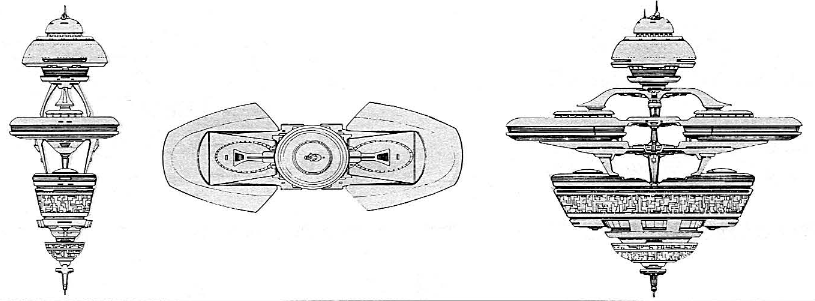

Alamo-type Defense Outpost (UFP)

Battle Stats
Reactors and Superstructure
Total Power Units - 135 (Antimatter Reactor - 103, Auxiliary Generator - 32)
MPR - 10/1
Superstructure - 64
Beam Weapons (Phasers)
Max Power - 5
Firing Chart - W
Arcs - 4 per arc
Bonuses - +3(1-10) +2(11-17) +1(18-20)
Missile Weapons (Photon Torpedoes)
Power to Arm - 1
Damage - 10
Firing Chart - L
Arcs - 2 per arc
Deflector Shields
Max Shield Power - 16
SPR - 1/2